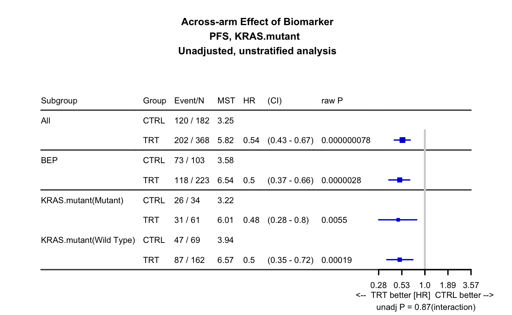

This function creates a forest plot along with table with summary statistics to infer biomarker effects, within a single arm or across two treatment arms. The outcome could be survival, binary or continuous. This function can be used to summarize a single biomarker variable
PlotTabForestBiomarker(data, outcome.class = c("survival", "binary"), outcome.var, trt = NULL, var = NULL, var.class = NULL, var.name = NULL, percentile.cutoff = 0.5, numerical.cutoff = NULL, greater = TRUE, less = FALSE, greater.by.less = FALSE, across.and.within = FALSE, equal.in.high = TRUE, within.bin = FALSE, show.itt = TRUE, show.bep = TRUE, bep = NULL, bep.name = "BEP", itt.name = "All", bep.indicator = 1, covariate = NULL, strata = NULL, tabforest = FALSE, quantile.type = 2, digits = 2, cutoff.digits = 2, placebo.code = NULL, active.code = NULL, rsp.cat = TRUE, rsp.response = c("CR", "PR"), rsp.nonresponse = c("SD", "PD", "NON CR/PD", "NE", NA), var.code = NULL, surv.conf.type = "plain", ties = "efron", alpha = 0.05, main = NULL, main.prefix = NULL, sub = NULL, clip = NULL, xticks = NULL, xticks.digits = 1, xlab = NULL, cex.headings = 1.1, cex.note = 0.8, cols = NULL, only.stat = FALSE, pdf.name = NULL, pdf.param = list(width = 12, height = 4.5), par.param = list(cex = 1, cex.main = 1, cex.sub = 1, cex.axis = 1))
| data | input data frame. Rows are patients and columns are variables (e.g. demographics variables, time to event variables, biomarker variables, treatment indicator, etc.). One patient per row. |
|---|---|
| outcome.class | type of the outcome variable. Default is |
| outcome.var | name of the outcome varible. If the outcome.class is binary or coutinuous, only one value should be provided. If the outcome.class is survival, two values should be provided - name of the 'time to event' variable and 'censorship' variable For the censoring variable, 1 indicates event and 0 indicates censoring. In all cases but when outcome.class=binary and rsp.cat=TRUE, patients with missing outcome variable (NA) will be excluded from BEP. |
| trt | name of the treatment variable. If this is NULL, within-arm analysis will be performed |
| var | name of the biomarker variable. only one variable should be specified. |
| var.class | class of the variable. valid categories are "numeric", "categorical". If the class is continuous, user needs to specify percentile.cutoff or numerical.cutoff to dichotomize the continuous measure into subgroups |
| var.name | display name for the biomarker variable |
| percentile.cutoff | percentile to dichotomize continuous biomarker measure. This could be a vector with multiple elements. Values should be between 0 and 1 |
| numerical.cutoff | raw value to dichotomize continuous biomarker measure. numerical.cutoff and percentile.cutoff cannot be both specified |
| greater | whether calculate summary statistics within the subgroup whose biomarker value is greater than or equal to cutoff value. If this is TRUE, in 2-arm study, across-arm HR within biomarker high group will be calculated. In single arm study HR of biomarker high vs low will be calculated. |
| less | whether calculate summary statistics within the subgroup whose biomarker value is less than the cutoff value. greater and less can both be TRUE |
| greater.by.less | whether show "greater" bin and "less" bin in consecutive rows. Default is FALSE. If it is TRUE, parameters greater and less will be both set as TRUE |
| across.and.within | whether show across- and within- arm results in the same figure. Default is FALSE. This parameter will be ignored if number of arm is 1. If it is TRUE, within-arm analysis results will be shown below the across-arm results. |
| equal.in.high | whether include equal in high group. Default is TRUE. If it is TRUE, ">=" and "<" will be applied. Otherwise "<=" and ">" will be applied. |
| within.bin | whether calculate summary statistics within bin (e.g. > cutoff1 and <= cutoff2). If within.bin is TRUE, greater and less will be set as FALSE. |
| show.itt | whether calculate summary statistics using all patients in full population (e.g. ITT). This will be ignored in 1arm case |
| show.bep | whether calculate summary statistics using all patients in BEP (biomarker evaluable population). This will be ignored in 1arm case |
| bep | name of the column which indicates biomarker evaluable population. If it is null, patients who have non NA records in biomarker variable will be used as BEP. |
| bep.name | preferred display name of the biomarker evaluable population. If it is NULL, bep will be used. |
| itt.name | preferred display name of the full population (e.g. ITT). If it is NULL, "All" will be used. |
| bep.indicator | In the subpopulation column, which value is used to define the biomarker evaluable population. |
| covariate | a vector specifying the covariate variables to be adjusted in the model. Default is set to NULL, meaning no adjustment. |
| strata | name of the stratification variables. Default is set to NULL, meaning no stratification. |
| tabforest | Default is FALSE. If it is FALSE, forest plot will be generated using forestplot() function. If it is TRUE, a table will be generated with forest plots incorpriated |
| quantile.type | an integer between 1 and 9 selecting one of the nine quantile algorithms. See |
| cutoff.digits, digits | cutoff.digits:number of digits for rounding when calculating cutoff. will only be used when percentile.cutoff is specified. digits: number of digits for the summary statistics display |
| placebo.code | name of the control arm of the treatment variable. If you want to specify placebo code using this parameter, both placebo.code and active.code need to be provided. |
| active.code | of the treatment/experimental arm of the treatment variable. If you want to specify active code using this parameter, both placebo.code and active.code need to be provided. |
| rsp.cat | whether the response outcome variable is coded as binary (1 as responder and 0 as non-responder), If rsp.cat is TRUE, responder categories and nonresponder categories should be specified in rsp.response and rsp.nonresponse (all values in the outcome column should be included in rsp.response and rsp.nonresponse) . If rsp.cat is FALSE, the response outcome variable should be coded as binary (0/1). At the same time rsp.response and rsp.nonresponse will be ignored. |
| rsp.response | categories that should be considered as responder. |
| rsp.nonresponse | categories that should be considered as non responder. |
| var.code | ordered levels of the biomarker variable. This will be ignored for continuous biomarker. If the biomarker is categorical and this is NULL, biomarker subgroups will be ordered by the order from factor() function |
| surv.conf.type | confidence interval type. Default is "plain". see conf.type in survfit |
| ties | Default is "efron". To match internal sas results, use "exact". See parameter "ties" in coxph. |
| alpha | type I error rate. Default is 0.05. |
| main, main.prefix | main title (prefix of title) of the forest plot. Default is "Association of biomarker effect within treatment arms". |
| sub | sub title under the forest plot. Default is NULL. |
| clip | range of the x-axis of the forest plot. Default is NULL. |
| xticks, xticks.digits | x axis tick marks for the forest plot |
| xlab | xlab for forest plot |
| cex.headings | amount of magnification of headings of the forest plot relative to cex. Default is 1.1. |
| cex.note | amount of magnification of the note. Default is 1. |
| cols | Color of the 'effect size' displayed in the forest plot. |
| only.stat | if it is TRUE, only summary statistics will be generated. No figure will be generated |
| pdf.name | name of output pdf file. If it's NULL, the plots will be displayed but not saved as pdf. Default is "Forestplot.pdf". |
| pdf.param | a list of parameters that define pdf graphics device. See |
| par.param | a list of parameters that define graphcial parameters. See |
data(input) PlotTabForestBiomarker(data=input, outcome.class=c("survival"), outcome.var=c("PFS","PFS.event"), trt="Arm", var="KRAS.mutant", var.class="categorical")#>#> code.v #> [1,] "Subgroup" "Group" "Event/N" "MST" "HR" "CI" #> [2,] "All" "CTRL" "120 / 182" "3.25" "" "" #> [3,] "" "TRT" "202 / 368" "5.82" "0.54" "0.43 - 0.67" #> [4,] "BEP" "CTRL" "73 / 103" "3.58" "" "" #> [5,] "" "TRT" "118 / 223" "6.54" "0.5" "0.37 - 0.66" #> [6,] "KRAS.mutant(Mutant)" "CTRL" "26 / 34" "3.22" "" "" #> [7,] "" "TRT" "31 / 61" "6.01" "0.48" "0.28 - 0.8" #> [8,] "KRAS.mutant(Wild Type)" "CTRL" "47 / 69" "3.94" "" "" #> [9,] "" "TRT" "87 / 162" "6.57" "0.5" "0.35 - 0.72" #> #> [1,] "raw P" #> [2,] "" #> [3,] "0.000000078" #> [4,] "" #> [5,] "0.0000028" #> [6,] "" #> [7,] "0.0055" #> [8,] "" #> [9,] "0.00019"